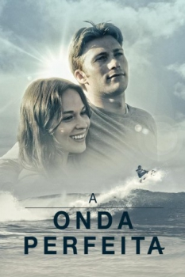

A Onda Perfeita (2014)



Avaliação (TMDb):


5.2/10 (38 votos)
Avaliação (Usuário):
Outro Título:The Perfect Wave
País:South Africa, 113 minutos
Idiomas falados:Inglês, Português
Gênero(s):Romance, Aventura, Drama
Diretor(s):Bruce MacDonald
Codec:MPEG-2 (DVD)
Número: 3586
Sinopse:
O filho de Clint Eastwood é o protagonista do filme sobre surf, e baseado numa história verídica, “The Perfect Wave”. Na película, Scott Eastwood interpreta o papel do surfista Ian McCormack, onde é contada a história de um jovem rebelde à procura do sentido da vida.
Elenco:
Scott Eastwood, Cheryl Ladd, Patrick Lyster, Rachel Hendrix, Scott Mortensen, Nikolai Mynhardt
Tipo de mídia: DVD5,
Legendas: Português
Alugado: Não
Tela: 1.78:1